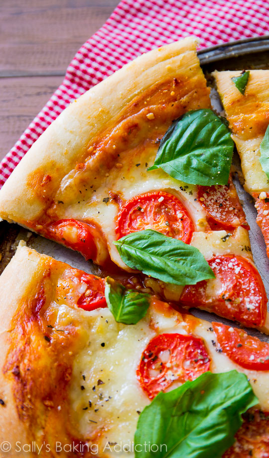

Classic Margherita Pizza

Description
This classic Margherita pizza showcases simple yet vibrant flavors with fresh tomatoes, basil, and mozzarella. It's a favorite for pizza lovers everywhere!
Ingredients
- 1 lb (450g) pizza dough, homemade or store-bought
- 1/2 cup pizza sauce or marinara sauce
- 8 oz (225g) fresh mozzarella cheese, sliced
- 2-3 ripe tomatoes, thinly sliced
- Fresh basil leaves
- Salt and pepper to taste
- Olive oil for drizzling
Steps
- Preheat your oven to the highest temperature it can go (usually around 500°F or 260°C).
- Roll out the pizza dough on a floured surface to your desired thickness.
- Place the rolled-out dough on a pizza stone or baking sheet.
- Spread the pizza sauce evenly over the dough, leaving a small border around the edges.
- Arrange the sliced tomatoes and fresh mozzarella on top of the sauce.
- Season with salt and pepper to taste.
- Bake in the preheated oven for 10-12 minutes, or until the crust is golden and the cheese is bubbly and slightly browned.
- Remove from the oven and sprinkle fresh basil leaves over the pizza.
- Drizzle with olive oil, slice, and serve hot.
Go back to the homepage